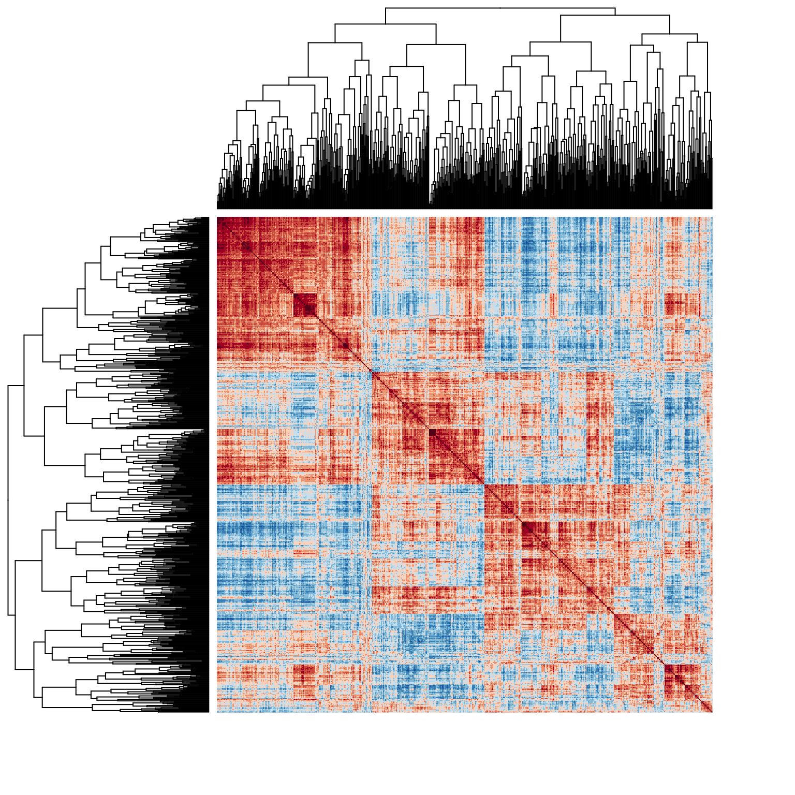

MINT
Multidimensional Interoceptive Traits questionnaire · Makowski et al.
How people sense the inside of their own body, as a trait.
The
The Science-based Assessment of Deep Personality
Documentation
01 · The problem #
The instruments are rarely what fails. The answering is.
Psychology runs on questionnaires, nearly all asked the same way: a page of radio buttons on a platform built for the person writing the study, not the person answering it. No validation survives careless answers.
For the participantNothing makes it worth finishing
Qualtrics, Gorilla, jsPsych: good at building a study, indifferent to taking one. Grid after grid, then a thank-you.
The same item is answered worse at the end of a long battery, and those who stop halfway are not a random half.
An hour of honest answers buys a debriefing sheet: no reason to care how you answer, come back or tell anyone.
For the dataSo what comes back is weak
Often a tenth of an online sample or more (Meade & Craig, 2012), and enough to make unrelated scales correlate (Huang et al., 2015).
Most scales are used once or twice (Elson et al., 2023) and seldom side by side, so whether grit is just conscientiousness is rarely checked.
A few scales, a few hundred people, a file kept on a drive. Pooling them later means reconciling what never matched.
02 · The answer #
A survey people want to finish.
The questionnaires are ordinary validated ones, asked as written. Everything around them is designed for the person answering, so that the last question is read as carefully as the first.
The aim: high-quality, re-usable, open datasets, with many measures answered by the same people, so how far they overlap can be seen.

For the participantReasons to keep going
Levels, dressed as a dive: a depth gauge, landmarks passing, the seabed and the rock below.
Each level closes on a figure drawn from the answers just given: a body, a hill, a sea, a wheel.
After the first level, participants pick which part of themselves to test next, from two or three cards.
Each level mints a badge onto a shelf, and a whole-run profile fills in as the levels do.
For the dataAnswers worth keeping
Every reading can be agreed or disagreed with, every level rated: the Barnum effect, caught in the act.
Attention checks, response times and an honesty question, recorded for every level and shown to nobody.
Answers are saved as they are given, and a run left partway picks up where it stopped.
Results go out as a link or an image that opens into the test: recruitment by word of mouth, filed as such.
Built to be changed: the questions are data rather than code, and each project asks its own levels from its own link.
03 · The first project #
A project defines a list of mandatory, priority levels that every participant starts with, before the optional ones. The aim of this first project is to collect more data on the MINT and to validate a scale of attitudes to AI, the BAIT.
Multidimensional Interoceptive Traits questionnaire · Makowski et al.
How people sense the inside of their own body, as a trait.
Beliefs about Artificial Intelligence Technology · Makowski et al.
What people believe AI can make, and how they feel about it.
Core · levels 1–4, every participant
Optional · levels 5–9, the participant's choice
04 · What is asked #
Every questionnaire in the test, with its reference, what it scores and how many items it asks. Pick a row to read the items themselves.
| Level | Questionnaire | Dimensions | Items |
|---|---|---|---|
| 1 | Demographics | None | 6 |
| 1 | Five-Item Personality Inventory (FIPI; Gosling et al., 2003) | Extraversion, Agreeableness, Conscientiousness, Emotional Stability, Openness | 5 |
| 1 | Single Item Narcissism Scale (SINS; Konrath et al., 2014) | None | 1 |
| 1 | Single-Item Self-Rated Health (SRH; DeSalvo et al., 2006) | General Health | 1 |
| 1 | Single-Item Measure of Stress Symptoms (SIMS; Elo et al., 2003) | None | 1 |
| 1 | Single-Item Self-Esteem Scale (SISE; Robins et al., 2001) | None | 1 |
| 1 | Self-Concept Clarity Scale, item 11 (SCCS; Campbell et al., 1996) | None | 1 |
| 1 | Meaning in Life Questionnaire, item 8 (MLQ; Steger et al., 2006) | None | 1 |
| 1 | General Self-Efficacy Single-Item (GSE-SI; Di et al., 2023) | None | 1 |
| 1 | Aesthetic seeking | None | 1 |
| 1 | Single-Item Life Satisfaction Scale (SILS; Cheung & Lucas, 2014) | Life Satisfaction | 1 |
| 1 | Self-placement items | None | 2 |
| 2 | Demographics | None | 9 |
| 2 | Multidimensional Interoceptive Traits questionnaire (MINT; Makowski et al.) | Bodily Awareness, Bodily Clarity, Bodily Sensitivity | 34 |
| 3 | Subjective financial well-being (ESS / OECD item) | None | 1 |
| 3 | MacArthur Scale of Subjective Social Status (Adler et al., 2000) | None | 1 |
| 3 | Beliefs about Artificial Intelligence Technology (BAIT; Makowski et al.) | AI Realism, AI Apprehension, AI Enthusiasm | 27 |
| 4 | Patient Health Questionnaire-4, refined 5-option version (PHQ-4; Kroenke et al., 2009; Makowski et al., 2025) | Anxiety, Depression | 4 |
| 4 | Single-Item Sleep Quality Scale (SQS; Snyder et al., 2018) | Sleep | 1 |
| 4 | Psychiatric history | None | 2 |
| 4 | HiTOP Brief Report (HiTOP-BR; Simms et al., 2026) | Dominance, Unusual Experiences, Bodily Complaints, Solitude, Emotional Intensity, Impulsivity | 46 |
| 5 | HEX-ACO-18 (Olaru & Jankowsky, 2022) | Honesty-Humility, Emotionality, Sociability, Patience, Diligence, Curiosity | 19 |
| 5 | Social Desirability-Gamma Short Scale (KSE-G; Kemper et al., 2014) | None | 6 |
| 6 | Open Source Archetype Indicator – Pearson-Marr (OSAI-PM) | Idealist, Sage, Seeker, Revolutionary, Magician, Warrior, Realist, Jester, Lover, Creator, Ruler, Caregiver | 37 |
| 7 | Primals Inventory-18 (PI-18; Clifton & Yaden, 2021) + five tertiary scales (PI-99; Clifton et al., 2019) | Enticing, Alive, Safe, Acceptable, Changing, Hierarchical, Interconnected, Understandable | 41 |
| 8 | Adult ADHD Self-Report Scale v1.1, items 1-2 (ASRS; Kessler et al., 2005) | Inattention | 2 |
| 8 | Cognitive Failures Questionnaire, items 10 and 21 (CFQ; Broadbent et al., 1982) | Absent-Mindedness | 2 |
| 8 | Mind Wandering: Spontaneous, items 1 and 4 (MW-S; Carriere et al., 2013) | Mind Wandering | 2 |
| 8 | Brief Self-Control Scale, items 1-2 (BSCS; Tangney et al., 2004) | Self-Control | 2 |
| 8 | Emotion Reactivity Scale, six items (ERS; Nock et al., 2008) | Emotional Sensitivity, Emotional Arousal, Emotional Persistence | 6 |
| 8 | Cognitive Emotion Regulation Questionnaire, short form (CERQ-short; Garnefski & Kraaij, 2006) | Self-Blame, Acceptance, Rumination, Positive Refocusing, Refocus on Planning, Positive Reappraisal, Putting into Perspective, Catastrophising, Other-Blame | 19 |
| 9 | Left-right self-placement (European Social Survey) | None | 1 |
| 9 | Conspiracy Mentality Questionnaire, items 1, 4 and 5 (CMQ; Bruder et al., 2013) | Suspicion | 3 |
| 9 | British Social Attitudes left-right and libertarian-authoritarian scales, adapted (BSA; Evans et al., 1996) | Sharing, Order | 7 |
| 9 | Equality of outcomes between groups | Parity | 5 |
| 9 | Human enhancement and heredity beliefs | Enhancement, Heredity | 7 |
| 9 | Climate, animals and the environment | Planet, Animals | 9 |
| 9 | Beauty against purpose | Beauty | 3 |
| 9 | Words Can Harm Scale, items 6 and 8 and one reversed item, adapted (WCHS; Pratt et al., 2026) | Words | 3 |
| 5 | Interim items, at the end of the core | None | 2 |
| 10 | Closing items | None | 2 |